Интернет-магазин интерьерных картин
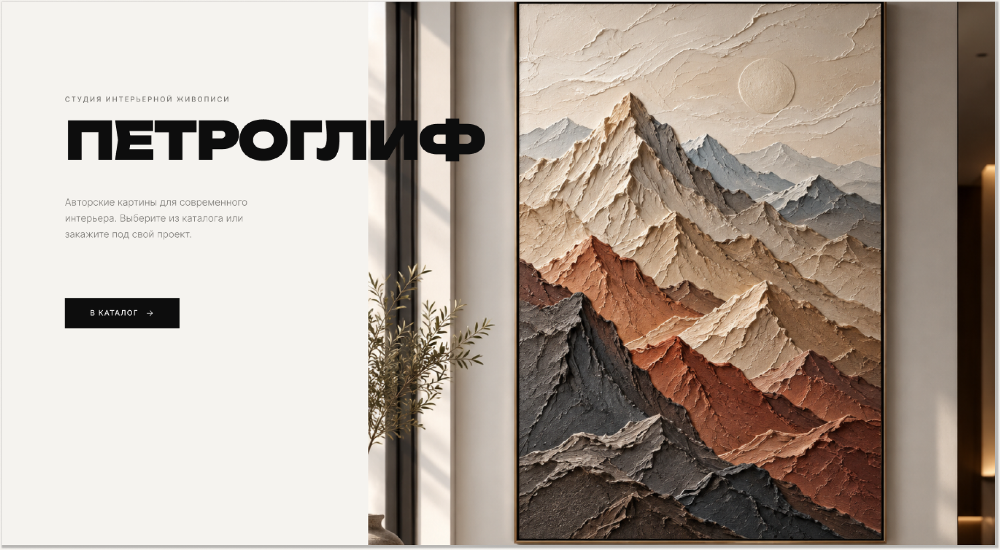
Задача и моя роль
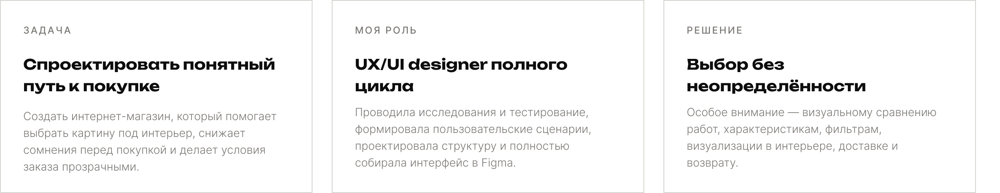
Исследование → структура →
проверка → интерфейс
Процесс строился итеративно: сначала я собрала контекст рынка и пользовательские ожидания, затем сформировала сценарии и архитектуру, проверила прототип на пользователях и только после этого финализировала визуальную систему.
Как рынок помогает выбирать
искусство
Я изучила три магазина и сравнила подачу каталога, карточек товара, доверительных сигналов и условий покупки.
Задача этапа — понять, какие паттерны помогают принять решение, а где возникает перегруз или недоверие.
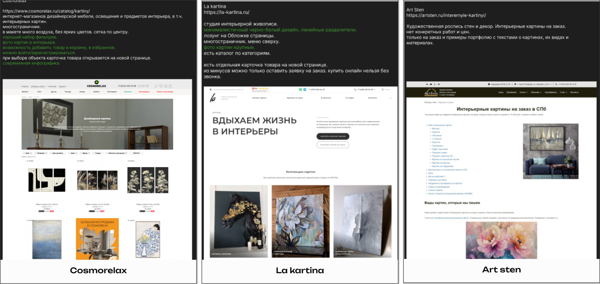
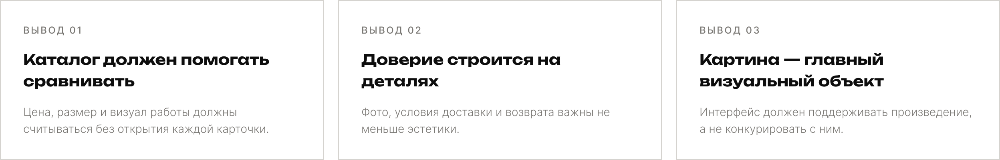
Галерейная подача вместо типового e-commerce
В референсах я искала не конкретные UI-паттерны для копирования, а атмосферу: крупный масштаб, редакционную типографику, чистый фон и ощущение цифровой выставки.
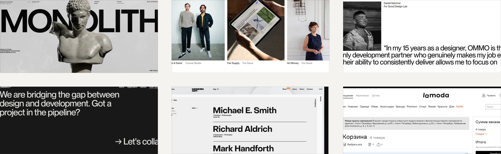
Три модели поведения — один каталог
Персоны показали разные скорости принятия решения: быстрый покупатель хочет минимум шагов, визуальный исследователь сравнивает и возвращается, осторожный пользователь ищет гарантии и подробности.
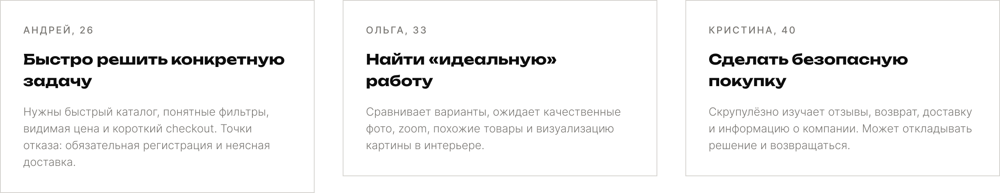
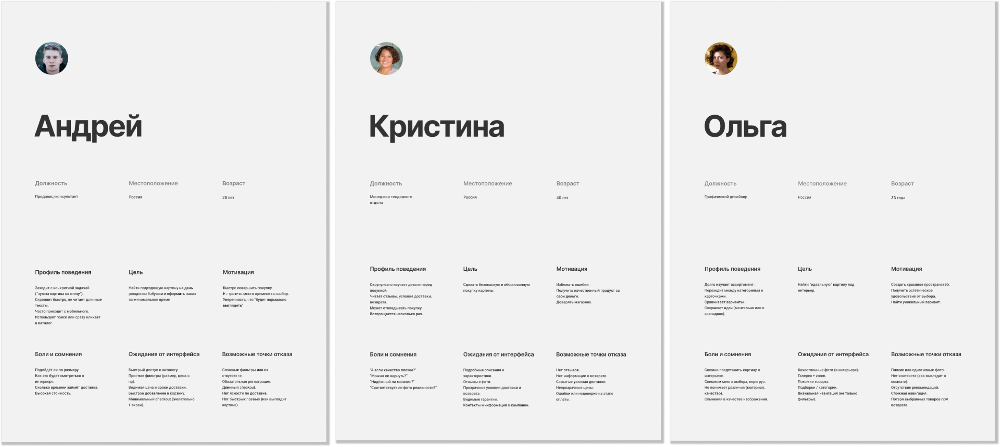
Где пользователь сомневается
Journey Map помогла увидеть путь целиком — от первого знакомства с магазином до оплаты и отслеживания заказа. Основной риск концентрируется в точках выбора, доверия и прозрачности стоимости.
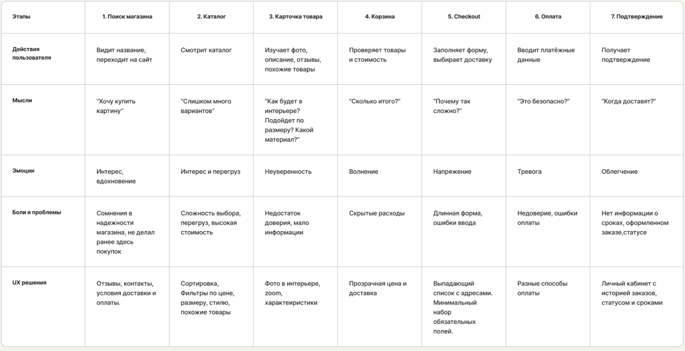
Сценарий покупки
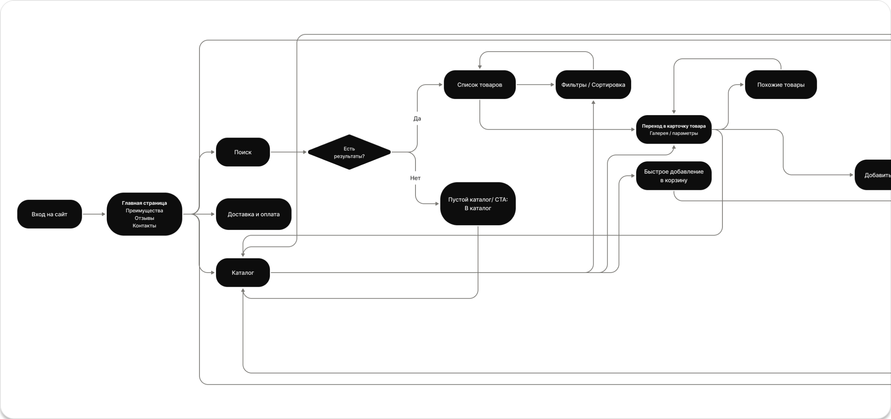
Проверка сценария на пользователях
Тестирование проходило удалённо в Zoom по заранее подготовленному сценарию с четырьмя пользователями. Все участники прошли сценарий, а замечания были проанализированы и приоритизированы для следующей итерации.
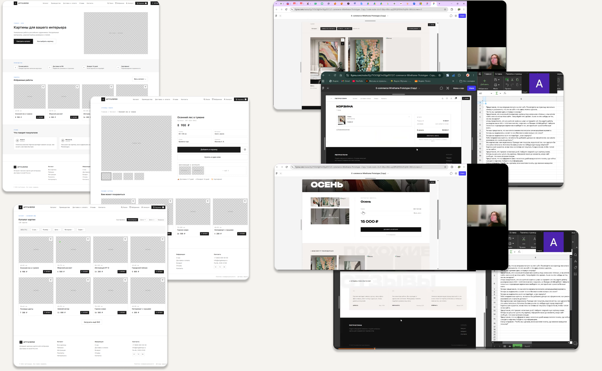
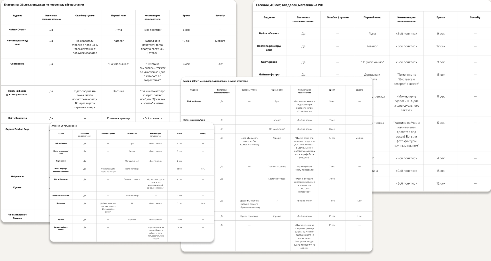
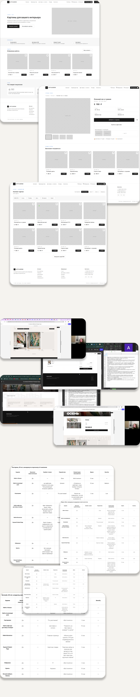
От исследования стиля — к выбранной системе
До финального направления я рассмотрела несколько композиций и визуальных языков. В итоговой версии сохранила сильную идентичность, выставочный масштаб и более спокойную коммерческую логику.
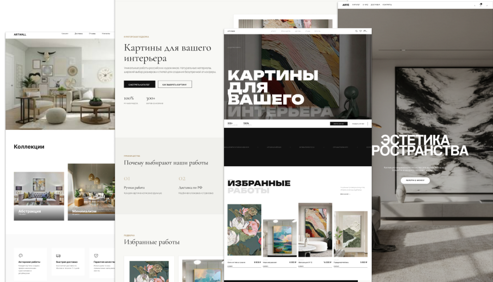
Целостный UX/UI для выбора искусства онлайн
Интерфейс сочетает галерейную подачу с понятной e-commerce логикой: пользователь может быстро ориентироваться в каталоге, сравнивать работы, изучать детали и уверенно двигаться к покупке.
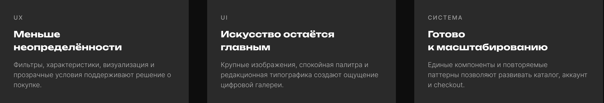
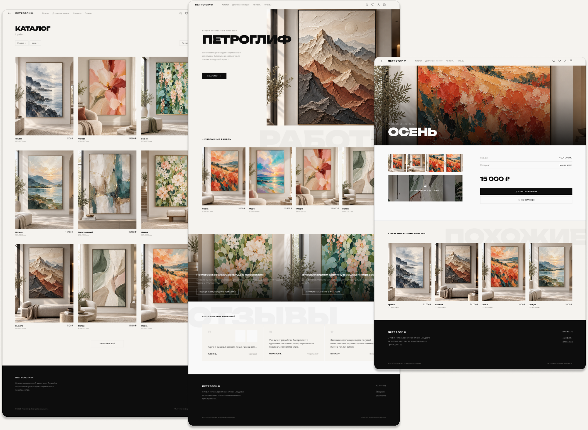
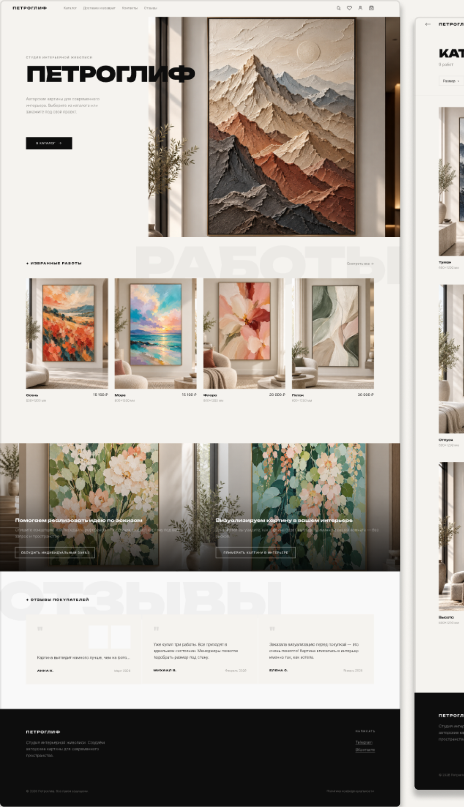
Дизайн, который помогает выбирать
Проект прошёл полный UX/UI-цикл: анализ рынка, пользовательские модели, путь и сценарии, прототипирование, удалённое модерируемое тестирование и финальную визуальную систему. Результат — интерфейс, в котором эмоциональная ценность искусства поддержана понятной логикой покупки.
←